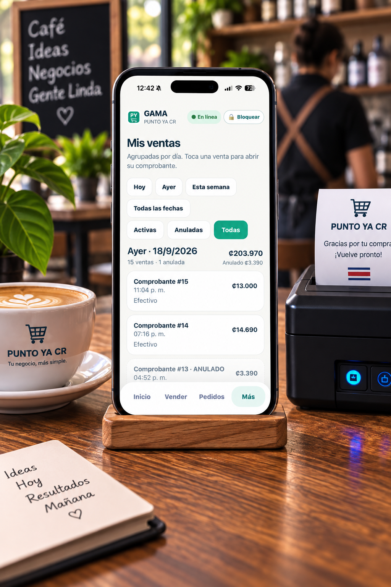
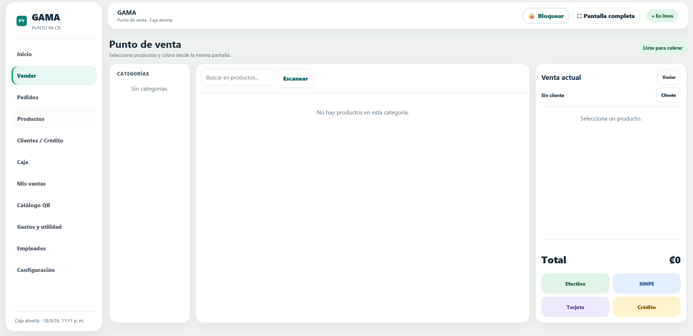
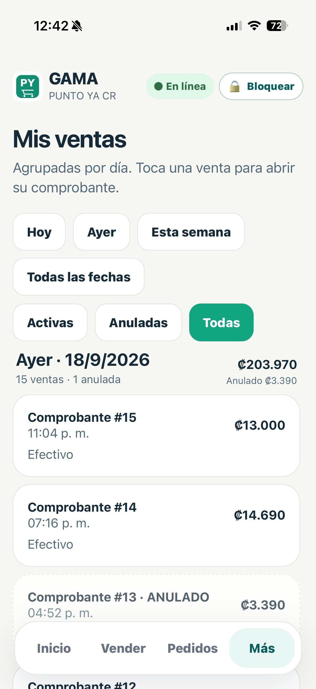
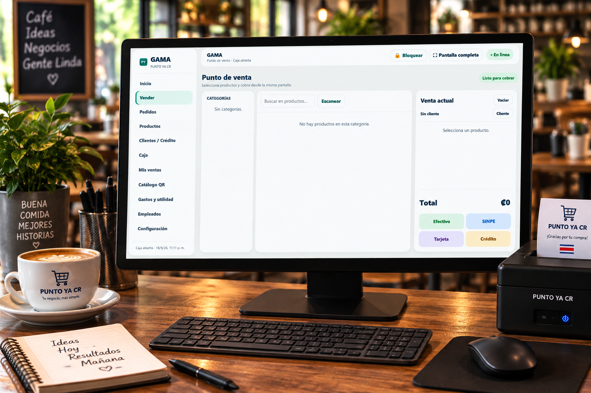
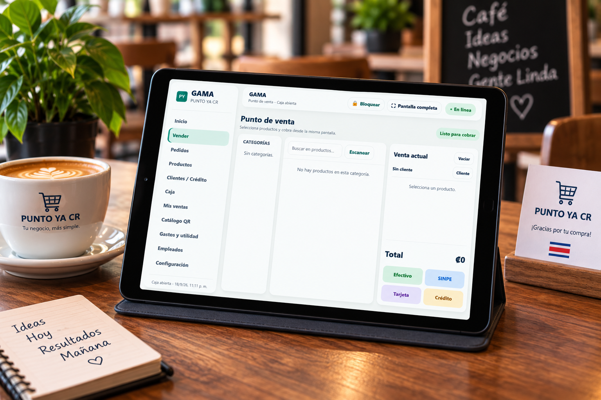
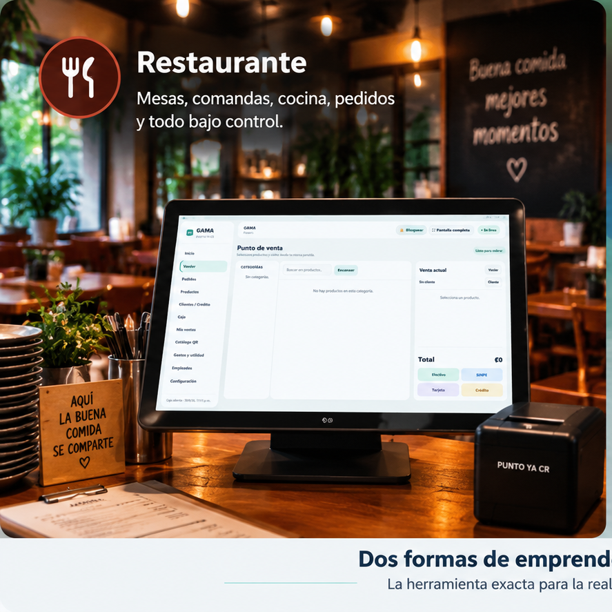
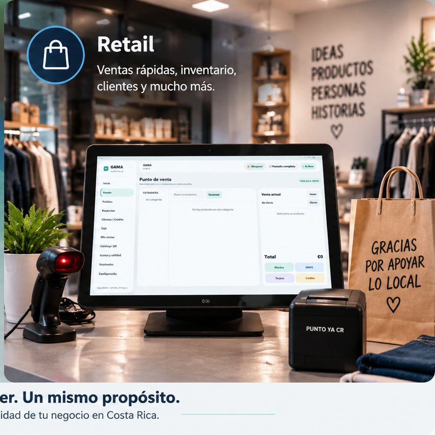

Android
Llévalo contigo.
PRÓXIMAMENTE La aplicación oficial para Android todavía no está publicada.Vende, controla y entiende tu negocio desde un solo lugar. Diseñado para emprendedores que necesitan claridad, no complicaciones.


Úsalo desde computadora y tablet. La aplicación oficial para Android llegará próximamente.

Llévalo contigo.
PRÓXIMAMENTE La aplicación oficial para Android todavía no está publicada.
Ideal para tu punto de venta.
Abrir versión web Úsalo desde tu navegador
Más espacio, la misma simplicidad.
Usar en Tablet PUNTO YA CR adaptado a tu pantallaUna misma herramienta, adaptada a la forma en que trabajas.


PUNTO YA CR te ayuda con la operación diaria. El Panel del Emprendedor transforma esa información en una visión clara de cómo va tu negocio.
Ventas, caja, inventario, clientes, mesas, cocina y pedidos en una experiencia sencilla.
Una vista más clara de tus ventas, dinero, obligaciones y crecimiento para administrar mejor.
Ventas, dinero, crecimiento y contabilidad en un solo lugar. PUNTO YA CR Pro convierte tus datos en una visión sencilla de tu negocio.
Mantén tus pagos y cuentas pendientes visibles desde un solo lugar.
Ver mi negocioEn pocos pasos puedes tener tu negocio listo para comenzar a trabajar con PUNTO YA CR.
Registra tu negocio y configura lo básico para comenzar.
Usa PUNTO YA CR para realizar tus ventas y llevar el control de tu negocio.
Consulta tus ventas, inventario y la información que necesitas desde un solo lugar.
El mismo PUNTO YA CR, con más herramientas para entender y administrar tu negocio.
Precios finales. Impuestos incluidos.
Flexibilidad para empezar con Pro.
Tres meses de PUNTO YA CR Pro.
Un año completo con el mejor precio.
Los códigos del Programa Fundadores, regalos y promociones se canjean desde tu Panel del Emprendedor.
Los pagos en línea estarán disponibles cuando conectemos la pasarela oficial. Mientras tanto, PRO puede activarse mediante códigos autorizados.
Estamos preparando la integración de facturación electrónica de Costa Rica para que forme parte natural del flujo de PUNTO YA CR.
La sección se publicará como disponible cuando la integración haya sido terminada y probada. No necesitas cambiar de forma de trabajar hoy.
PUNTO YA CR reconoce a los primeros restaurantes y comercios que se suman al proyecto y nos ayudan a mejorarlo con su experiencia real.
Seguimos mejorando PUNTO YA CR con la experiencia de negocios reales de Costa Rica.
Diseñamos PUNTO YA CR para que cada negocio trabaje con su propia cuenta, información y controles de acceso.
La información se organiza por negocio para mantener una experiencia clara.
Las funciones y datos se muestran según la cuenta y los permisos disponibles.
La operación puede dividirse según las responsabilidades dentro del negocio.
PUNTO YA CR nació con una idea sencilla: administrar un negocio no debería sentirse complicado.
Detrás de un restaurante, una tienda o un pequeño comercio hay personas que venden, compran, atienden clientes, controlan inventario y pagan proveedores. Al final del día necesitan poder responder algo muy simple: ¿cómo va mi negocio?
Por eso construimos una herramienta que une la operación diaria con información fácil de entender, sin convertirla en un sistema difícil de usar.
No basta con vender. También necesitas entender cómo va tu negocio.
PUNTO YA CR está enfocado inicialmente en Restaurante y Retail, con herramientas adaptadas a la operación de cada uno.
PUNTO YA CR se concentra en operar el día a día. El Panel del Emprendedor te ayuda a consultar y entender la información del negocio.
Pro amplía el Panel con herramientas de dinero, proveedores, cuentas, crecimiento, metas, contabilidad y reportes.
Todavía está en preparación. La anunciaremos como disponible cuando la integración para Costa Rica esté terminada y probada.
Es una iniciativa para reconocer y acompañar a los primeros negocios que usan PUNTO YA CR y comparten retroalimentación para seguir mejorando el servicio.
Una herramienta cercana, sencilla y pensada para la realidad de nuestros emprendedores.
Menos tiempo entendiendo sistemas.
Más tiempo haciendo crecer tu negocio.